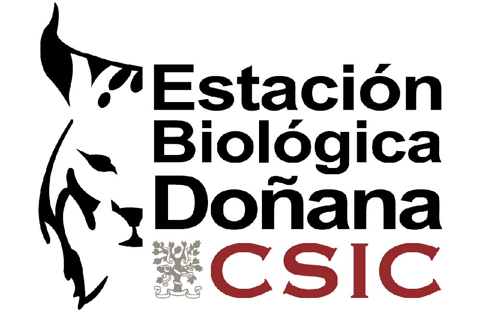
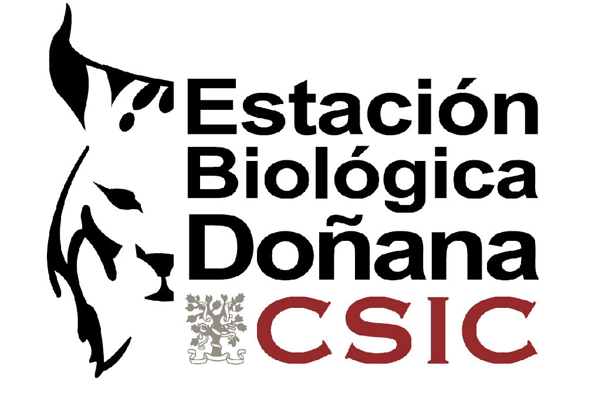

Campos llenos de vida
Proyecto: Showcase
Coordinador: Ignasi Bartomeus (EBD-CSIC)
En nuestro día a día convivimos con cientos de especies animales y vegetales increíbles. Algunas nos ayudan a polinizar nuestras plantas, otras fijan carbono de la atmósfera, otras fertilizan nuestro suelo y otras simplemente nos deslumbran con su belleza. Nos apasiona la naturaleza, y por eso llevamos tiempo trabajando para entender cómo aprovechar estos recursos naturales de forma sostenible. Con este proyecto queremos apoyar y acompañar a agricultores que quieren cuidar de su tierra y crear espacios biodiversos y rentables. Queremos dar voz a una manera de cultivar sostenible que permita conservar la naturaleza en paisajes productivos.
El proyecto SHOWCASE es un proyecto internacional financiado por el programa EU-H2020 conformado por más de 20 instituciones públicas y privadas en toda Europa. Parte de este proyecto pretende involucrar a agricultores, cooperativas, investigadores y conservacionistas en un proceso colaborativo para encontrar soluciones en que todos ganemos. Esto implica crear comunidades donde colaborar entre todos para diseñar, implementar y evaluar medidas que permitan mejorar la conservación de la naturaleza a la vez que la productividad y sostenibilidad de nuestros campos de cultivo. Tenemos cinco años por delante para ello (2021-2025).
¿Qué hacemos?
Apoyamos a una agricultura con sentido común. Una agricultura que piensa a largo plazo y que está comprometida con el medioambiente. Para ello no hay una receta única. El éxito reside en co-diseñar medidas adaptadas a la realidad económica, social y ecológica de cada lugar y evaluar ese proceso rigurosamente. En España, estamos empezando a construir esta comunidad en el valle del Guadalquivir (Norte de Sevilla), alrededor de cultivos de frutales (pero no necesariamente restringido a ellos). Las acciones a llevar a cabo pueden variar desde desarrollar herramientas sencillas para medir el potencial polinizador de las fincas, hasta optimizar el uso del agua, todo dependerá de las necesidades y posibles soluciones que encontremos.
¿Quieres participar?
Para crear esta comunidad nos hemos centrado en el valle del Guadalquivir. Si eres agricultor, cooperativa, ong, o cualquier agente involucrado y quieres participar contacta con nacho.bartomeus@gmail.com. Hay muchas maneras de participar, desde dejar oír tu voz, hasta involucrarte implementando las medidas co-diseñadas en tu campo. El único objetivo es que este proyecto sea útil para todos, así que participar en una oportunidad de beneficiarse de recursos y experiencia compartida.
En este mapa iremos situando los actores implicados:
Preguntas frecuentes:
¿Solo estáis actuando en el valle del Guadalquivir? Como comunidad piloto, sí. Pero pronto empezaremos a generar documentación y recursos para poder auto-organizarse en otras regiones y estaremos encantados de echar una mano compartiendo nuestra experiencia.
¿Qué ofrecéis exactamente? Ofrecemos conocimiento e información para diseñar, y sobretodo, para evaluar el resultado de innovaciones de forma rigurosa. También podemos ofrecer recursos para implementar acciones co-diseñadas en la medida de nuestras posibilidades (pero no subsidios directos). Ofrecemos la potencia de un proyecto Europeo con voz en europa para hacer llegar tu voz a las personas que diseñan la futura política agraria europea.
¿Y qué esperáis de los participantes exactamente? Compartir conocimiento mediante talleres, entrevistas o cuestionarios cortos. Todos vamos muy ocupados, así que estos van a ser cortos y productivos. Si eres agricultor, buscamos 15 fincas que quieran involucrarse en realizar innovaciones basadas en la biodiversidad co-diseñadas con nosotros. También buscamos 15 fincas que no quieran hacer acciones específicas, pero nos dejen acceso para medir biodiversidad y producción. Todos los datos serán anonimizados.

Con la colaboración de:
 
